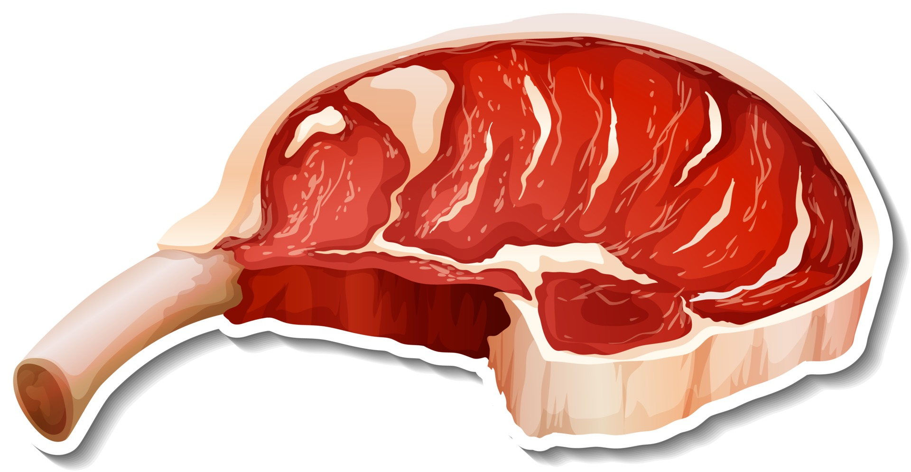
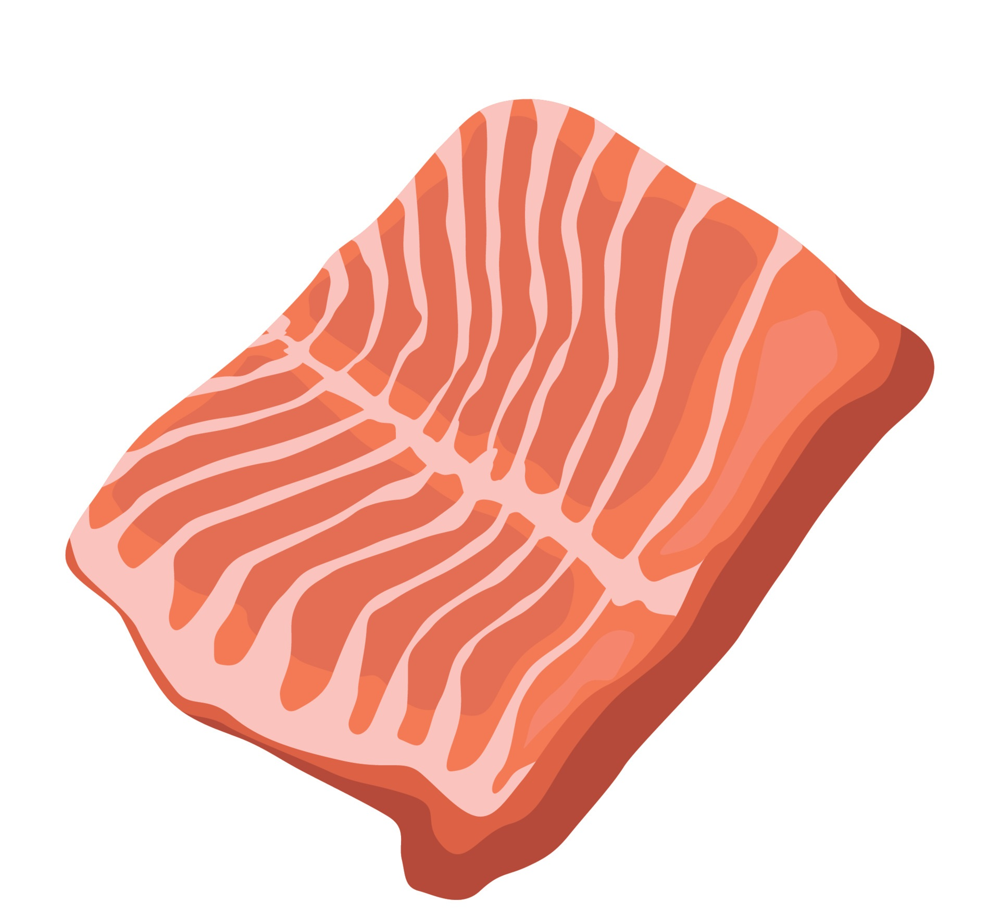
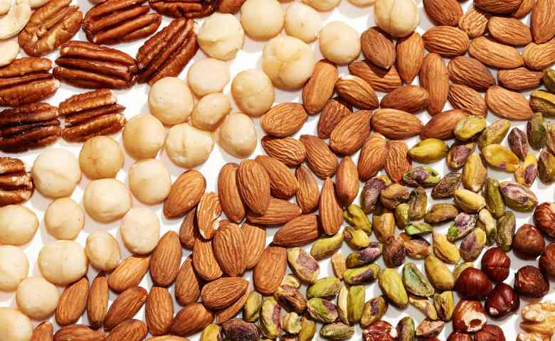
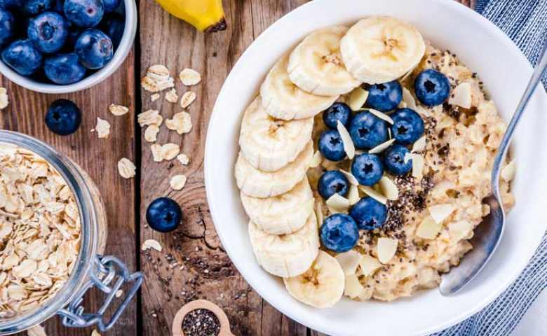
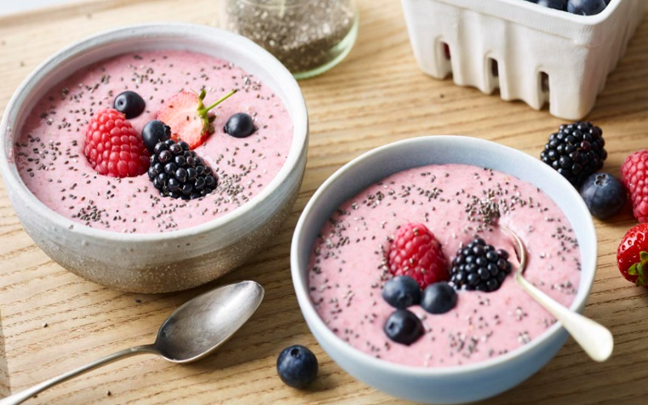
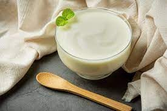
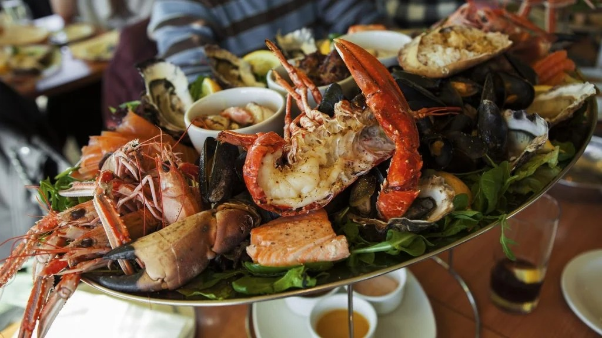
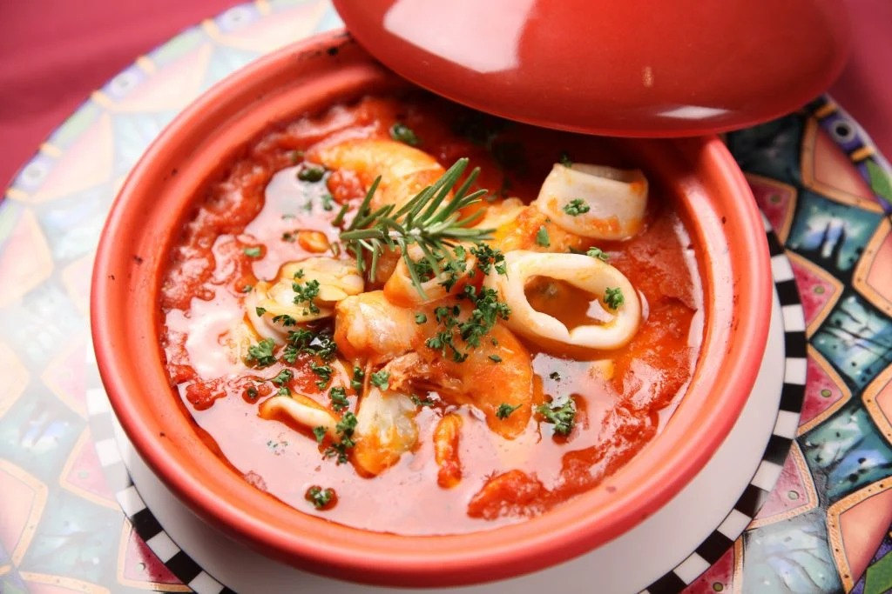
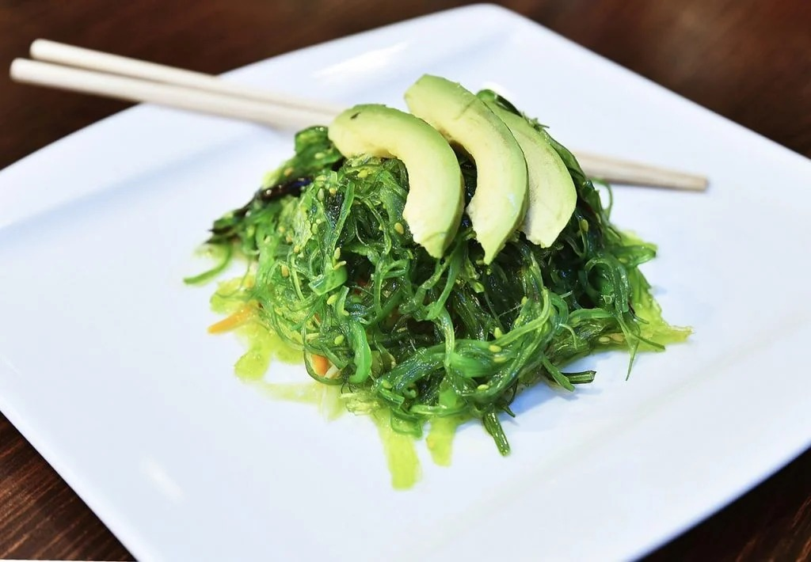

Daging Sapi
Rp.200.000/Kg
Daging sapi bermanfaat untuk mengurangi risiko anemia. Daging sapi merupakan sumber zat besi yang sangat baik. Daging sapi bermanfaat untuk mempercepat penyembuhan. Daging sapi mengandung seng dalam jumlah tinggi. Daging sapi
bermanfaat untuk menjaga kesehatan otot. Protein dalam daging sapi berperan penting dalam menjaga kesehatan otot.

Daging Ikan Salmon
Rp.35.000/Gram
Mendukung kesehatan dan fungsi otak Kandungan asam lemak omega-3 dan antioksidan pada ikan salmon juga berperan penting dalam memelihara kesehatan dan fungsi otak. Berbagai nutrisi tersebut diketahui dapat meningkatkan daya
ingat dan konsentrasi serta mencegah pikun atau demensia, terutama pada lansia.

Kacang Almond
Rp.165.000/Kg
Kacang-kacangan sangat baik untuk kesehatan jantung dan jadi salah satu pencegah diabetes lho. Hal ini dikarenakan kacang mengandung magnesium dan lemak tak jenuh yang sehat untuk tubuh. Kandungan lain dalam kacang yang sangat
bermanfaat untuk tubuh adalah antioksidan untuk menangkal radikal bebas, dan serat yang baik untuk pencernaan.

Oatmeal
Rp.45.000/Porsi
Oatmeal adalah salah satu makanan superfood yang biasa disantap ketika sarapan. Kandungan serat yang tinggi dalam oatmeal sangat baik untuk sistem pencernaan. Makanan ini juga bisa membuat kamu merasa kenyang lebih lama,
sehingga konsumsi makanan sepanjang hari dapat lebih terjaga. Sajikan oatmeal dengan susu dan madu untuk menambah rasa manis alami

Smoothies
Rp.47.500/Porsi
Smoothies adalah minuman kesehatan organik yang terbuat dari sayuran dan buah-buahan. Penampilannya menyerupai jus buah tetapi lebih kental seperti milk shake (susu kocok), karena tidak melalui proses penyaringan. Smoothies yang
terbuat dari buah-buahan dari sayur dapat digunakan untuk detoksifikasi

Yogurt
Rp.28.500/Porsi
Yogurt mengandung probiotik yang sehat untuk kesehatan usus dan sistem pencernaan. Selain itu, terdapat juga kandungan lain yang sangat baik untuk tubuh, yaitu kalsium, vitamin B12, kalium, fosfor, dan zinc. (yogurt) Untuk
mendapatkan manfaat yang optimal, direkomendasikan untuk mengkonsumsi yogurt Yunani (Greek yoghurt) rasa plain agar mendapat ekstra protein dan tidak terlalu banyak gula tambahan.

Kepiting
Rp.90.000/Porsi
Kepiting atau dalam bahasa latin disebut dengan krustasea termasuk dalam salah satu jenis makanan dengan kandungan kadar protein dan Omega 3 yang tinggi. Mengandung unsur selenium, kromium, kalsium, tembaga, dan seng. Tinggi
Omega 3 adalah hal terbaik tentang kepiting. Asam lemak ini memiliki sifat anti-inflamasi. Selain itu, selenium adalah antioksidan dan mineral yang kuat.

Cumi Asam Manis
Rp.25.000/Kg
Cumi adalah salah satu sumber kandungan protein yang bagus dan juga mengandung zat Omega-3, tembaga, seng, vitamin B dan yodium. Tembaga yang terkandung dalam tubuh cumi-cumi sangat penting untuk proses penyerapan, penyimpanan,
metabolisme, dan pembentukan sel darah merah. Sementara itu, kandungan kadar B2 yang tinggi pada cumi-cumi bisa membantu fosfor dan kalsium untuk membangun tulang dan gigi.

Rumput Laut
Rp.30.000/Kg
Rumput laut merupakan salah satu tumbuhan laut yang mengandung vitamin C, seng, dan yodium. Makanan ini mengandung protein yang sangat tinggi dan karbohidrat kompleks yang menyumbang 40% dari total berat rumput laut. Artinya
Anda akan mendapatkan energi dengan cepat dengan angka indeks glikemik rendah setelah memakannya. Kandungan serat rumput laut yang tinggi juga dapat membuat rasa kenyang lebih lama, yang sangat baik untuk pencernaan dan diet.